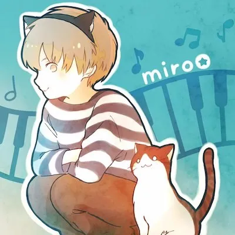
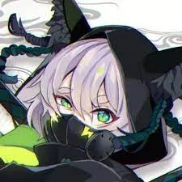

TUYU (ツユ) is a musical unit consisting of guitarist, composer and lyricist Pusu (ぷす) and vocalist Rei (礼衣).
Other members include pianist miro, illustrator Omutatsu (おむたつ) and animator AzyuN.
Formed : 12 June 2019, Japan
Genre : Pop Rock , J-Pop
Gender : Male
Birthday : May 23, 1994 (age 27)
Pusu's Twitter
History
In 2014, he started covering Japanese Songs. Just liek Takayan, he is an Utaite. At this time he was known as Zips and he started as a Vocaloid Artist
In 2015, he changed his name to Pusu and released a Uttatemita CD with other Utaite's at a Japanese Event Comiket 89
In 2016-2018, he created a duet with another Utaite, Miyakawa-Kun. Being known as MiyaPusu, they featured on and released many songs. During this time period, Pusu also collaborated with Shakemii and Stungun, to form the collaboration,ShakePusuTan. They featured on many songs together.
Pusu resigned from being a vocalist and vocaloid works. He then formed TUYU in 2019 along with Rei , miro, Omutatsu and AzyuN. TUYU is not a vocaloid band. Pusu is now the guitarist and producer of TUYU
Some of Pusu's Older Works(They are uploaded on the TUYU Channel, Alot of his much older works have been privated)
Rei AKA Reikomoro : She has no social media presence but she is their vocalist. She is suspected to be the utaite Aizawa but there is no concrete evidence yet.
Miro : He is their pianist and he also has his own Youtube Channel
He is also part of a Duo, Osamiro with Osamuraisan, a guitarist. However that channel has been inactive since TUYU started
This is their illustrator, the manga Artist, Omotatsu
This is their pianist Miro, his character

Lastly since Rei has little to no social media presence, this is AzyuN the designer & illustrator

About their Music
TUYU's lyrics talk about the message of self hate and how they would want to disappear of the face of the earth.
They point towards the real life problems a lot of teens are facing. Such as depression due to comparison with others, stress from everything they do, overthinking and et cetera.
They talk about all the pain one is feeling and how people force themselves through the pain, through ignoring it or for other people.
Overall their songs are more about the pain people are facing, and their reactions / ways of dealing with it. For example, in the song "Being low as dirt, taking whats important from me", their way of ridding themself of the pain is through blaming and talking down about someone else
I believe these lyrics are bringing more awareness about what some people are facing and sometimes the pain eats at them continuously and can poison their mindset.
Their Youtube Content
Their youtube channel only posts the music videos of the songs they produced
TUYU Channel First Video (It actually is Pusu's work not TUYU's but it was uploaded onto the TUYU Channel)
TUYU Channel Most Recent Video
TUYU Channel most viewed video (One of their top songs)
Personal Opinions of TUYU
I highly recommend them. The message their music is trying to put across, which im assuming is to find ways to help those people suffering right now is very well portrayed. It might not be releateable to everyone but its still worth the listen. Putting aside the message, the beat / instrumental itself is extremely upbeat and some are extremely catchy. This makes the music extremely enjoyable for everyone. They may be a 'new' band but i believe they are doing extremely well are able to appeal to their audience
My favourite song of theirs currently is Being low as dirt, taking what's important from me. I especially like the opening of it.